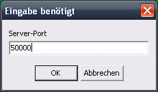
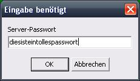

Einem Spiel beitreten
Wenn Sie einem Spiel beitreten wollen, wählen Sie im Hauptmenü Programm -> Spiel beitreten oder drücken Sie F3 auf ihrer Tastatur.
Nun werden Sie nach einer Server Adresse gefragt.
Hier können Sie eine IP-Adresse oder einen Hostnamen eines Rechners im lokalem Netzwerk oder Internet eingeben, auf der ein Spiel gestartet wurde.
Leider können Sie nicht Ihrem eigenen Spiel über die IP 127.0.0.1 oder dem Hostnamen localhost beitreten, da sie bereits belegt sind. Um gegen sich selbst spielen zu können, benutzen Sie Ihre Netzwerk- oder Internet-IP.
Danach werden Sie nach einem Port gefragt.

Beachten Sie, dass Sie nur Ports im Bereich von 49152 bis 65535 eingeben können, da nach IETF Richtlinie RFC 4340 die Ports 0 bis 49151 für andere Zwecke reserviert sind (verwaltet von der IANA) und nicht für private Zwecke gewählt werden sollten.
Sie können diese Einschränkung umgehen, indem Sie in der MauDauMau.ini Datei folgende Zeile im Client-Abschnitt anhängen: RFC4340=0
Eventuell werden Sie jetzt, sofern auf dem Server, mit dem Sie verbinden möchten Entsprechendes eingestellt ist, nach einem Passwort gefragt.

Falls der Server ein Passwort verlangt, können Sie ohne das richtige Passwort dem Spiel nicht beitreten.